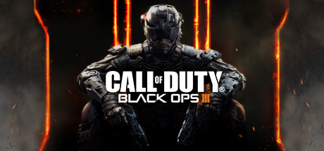
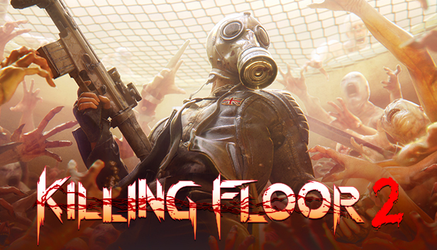
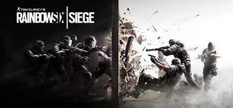

I love to play video games, for they are something I am good at and relieves me of my stress.
Overwatch - This is a 6 player team based game. Communication is key and is highly encouraged. Selection of heroes can increase team chemistry and overall help the team win. This is game is great because a lone person cannot merely carry the entire team on his/her back. This game allows me to grow on teamwork.
Black Ops 3 - This is a 4 player competitive game. It is team based and much like Overwatch, except that it has a faster pace and needs more commitment to detail. Also, one person is able to put his/her team on their back for the victory. This game allows me to excel at individual play.

Borderlands 2 - This is a 4 player action role-playing first person shooter. There are many weapons and mods to obtain from this game. There are over trillions of different modifications that a player is able to receive. The only way to get the best one is to play the game over and over again.This game allows me to pursue my goals, even if it takes hours or days.
Killing Floor 2 - TBA (Recently acquired)

Diablo 3 - This is a 4 player action role-playing in third person. This game is much like Borderlands 2, except that a player will eventually cap out until he/she finds better gear to use. This game allows me to get better after geting to the best position.
Rainbow 6 Siege - This is a 5 player tactical team based game. Like Overwatch, there is a need for high communication and is often rewarded at the end of the game. There many decision making points while playing and each decision may alter the outcome because each player only has one life per round. This game allows me to build upon team communication.